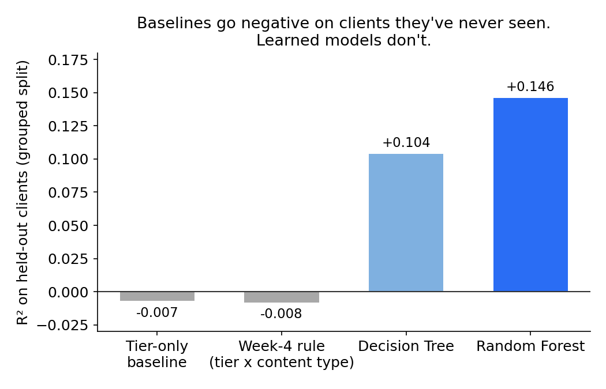
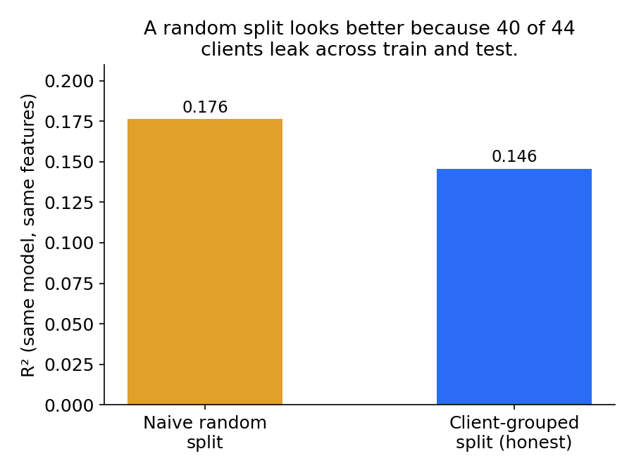
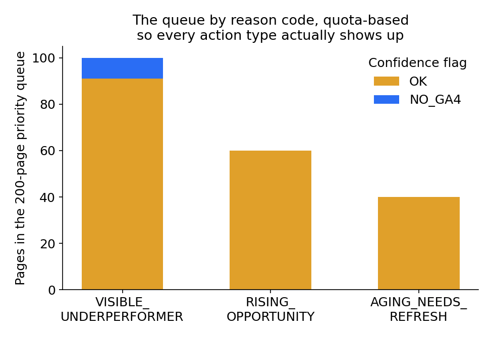

Which of Your Pages Are Losing Clicks They Should Be Getting?
Some published pages get far fewer clicks than similar pages sitting in a similar spot, and figuring out which ones deserve a look first is mostly guesswork today. I built a Random Forest that predicts a page's click-through rate from its search position, traffic, and on-page engagement, then tested it the way it actually has to work: on clients it had never seen during training. On those held-out clients, a simple average-by-position-and-content-type rule, the kind of thing that looks perfectly reasonable in a spreadsheet, does worse than just guessing the average, while the trained model explains roughly 15% more of the variance in CTR. I turned that model into a 200-page review queue with a plain-language reason attached to every page, not just a score. This is decision support for a human editor, not an automated fix, and it says nothing about rankings, conversions, or revenue, only about which pages are worth a look first.
Introduction
Here's the actual decision this is for: an editor or SEO strategist starts the month with hundreds or thousands of published pages and needs to pick a handful to review before doing anything else. FlyRank's tools already flag pages that look off, but "looks off" and "worth a person's time this month" aren't the same question, and I wanted to see how far real data could get toward telling them apart.
I picked one lane on purpose: pages that already rank somewhere visible but pull in fewer clicks than similar pages get. Not rankings, not conversions, not traffic overall. Just the click-through rate gap, and whether a model can spot it more honestly than the simple rules teams already use.
Data
Everything here comes from the FlyRank internship warehouse on Hugging Face, which the program describes as roughly 79 million rows of real production search performance data spanning many months and clients. I didn't touch anywhere near that much of it. My analysis lives inside a single month, March 2026, queried directly off the parquet files.
Two tables did the actual work. fact_content_daily_performance gave me daily
impressions, clicks, average search position, and a handful of Google Analytics engagement
fields, partitioned by month. dim_content gave me content type, publish status,
and, later, for the recommendations, content age and last-updated dates.
I rolled the daily rows up to one row per page per month, kept only published, non-deleted pages, and applied two filters that matter: at least 100 impressions that month, and an average position of 1 or higher (about 0.7% of rows had a physically impossible position under 1, which I dropped rather than tried to explain). That left 100,702 pages across 44 clients. FlyRank has 104 clients on file. Only 55 show any activity in March at all, and of those, 44 survive the filters above.
One month I never touched: June 2026 is the program's sealed evaluation file, and it stayed sealed through this entire project. No client names, raw URLs, or search queries appear anywhere in this write-up or the underlying notebooks, only pseudonymous IDs used strictly for grouping.
Methodology
The target is click-through rate: clicks divided by impressions, a plain fraction, nothing clipped or rescaled.
Two baselines exist before any modeling starts, and both stay frozen once the model shows up, meaning they're computed once on the full panel and never refit per split. The first is dead simple: average CTR for a page's position tier (top 3, page 1, striking distance, page 3 to 5, or deeper). The second is a rule from earlier in the project: average CTR for a page's position tier crossed with its content type, falling back to the tier-only number whenever a tier and content-type combination has fewer than 30 pages behind it.
The model is a Random Forest predicting CTR from average position, impressions, three GA4 engagement fields, a flag for whether GA4 data existed at all that month, and content type. I tried a shallow decision tree first, deliberately, and only kept the forest because it beat the tree by more than a token amount, 4.2 points of variance explained, not a rounding error.
The part I'd actually stand behind under questioning is the validation split. Rows are grouped by client, not shuffled randomly, because a page's client tells you a lot that has nothing to do with the features being used: brand strength, editorial habits, template choices. A random split would let a model quietly learn client identity through the back door. I didn't just assume this mattered, I checked it: training the identical model on a plain random 80/20 split versus a client-grouped 80/20 split, everything else held constant, meaningfully changed the honest error (see the chart below). Forty of forty-four clients showed up on both sides of the naive split. That's not a subtle leak.
Before trusting any of the seven features, I ran a leakage hunt on the actual pipeline: adding clicks (the thing CTR is literally computed from) back into the feature set sent R-squared from about 0.15 to 0.97 almost immediately, which is exactly what should happen if the check is working. None of the real features behave anything like that. The single strongest real feature, GA4 engaged sessions, was checked separately to confirm it isn't secretly built from the same click data as the label. It isn't: different source, same-day on-page behavior, correlated with CTR because both reflect page quality, not because one causes the other.
Results
On pages from nine clients the model never saw during training, here's what four methods manage on the exact same held-out rows:
| Model | R² (held-out clients) | Mean absolute error | % variance reduction vs. tier baseline |
|---|---|---|---|
| Tier-only baseline | −0.007 | 0.0036 | 0.0% |
| Week-4 rule (tier × content type) | −0.008 | 0.0036 | −0.13% |
| Decision Tree (depth 4) | 0.104 | 0.0033 | 11.0% |
| Random Forest (300 trees) | 0.146 | 0.0032 | 15.2% |

The negative baseline numbers are the finding I keep coming back to. A rule that looked completely reasonable when I built it earlier (average CTR by position tier and content type) actively hurts you on a brand-new client. Part of the reason: content type turns out to be almost a stand-in for which client you're looking at. 98% of the whole panel is one content type, and the typical client publishes exactly one type, full stop. A rule built on content type is quietly leaning on client identity, which is exactly the thing it can't see on a genuinely new client.

I also checked whether the model's "review this first" ranking actually differs from the old rule's, since that's the real decision this feeds. Comparing the top 20 flagged pages from each method on the same held-out rows, 12 overlap and 8 don't (a Spearman rank correlation of 0.89 across the full eligible queue). A model can look fine on R-squared and still point a person at a meaningfully different set of pages than the old rule would have.
Limitations
This says something about CTR and nothing about rankings, conversions, or revenue. It's a single month, so I have no evidence it holds up in a different season, or after a search algorithm update changes the landscape underneath everyone. It only covers clients and content types the model actually saw, and I have direct evidence, not just a hunch, that it does noticeably worse outside that set, so a brand-new client's queue should be trusted less until it's been checked separately. Pages under 100 impressions were excluded from the start, so there's no claim here about very low-traffic content in either direction.
None of this is causal. I'm not saying that reviewing a flagged page and rewriting its title will raise its CTR by some percentage, because nothing in a single cross-sectional month of data can support a claim like that. What I can say is narrower, and I think still useful: on the data I checked, these particular pages sit further from what similar pages achieve than most do, and that seems worth ten minutes of somebody's attention.
Ranked recommendations
The model's predictions turn into an actual queue, not just a sorted list of scores. Every
underperforming page gets a reason attached to it: VISIBLE_UNDERPERFORMER if it
already ranks well and the gap looks like a click-appeal problem (title, meta description,
snippet), RISING_OPPORTUNITY if it's close to page one and hasn't gone stale, or
AGING_NEEDS_REFRESH if it's close to page one and hasn't been touched in six
months or more.
The eligible pool, meaning any underperforming page that isn't buried past page 5, runs to roughly 64,000 pages, which isn't a to-do list for anyone. The queue I'd actually hand someone is 200 pages, and getting to that number took a real correction along the way. My first pass just took the top 200 by potential clicks recovered, and it came back with zero aging-content pages, because that category lives in lower-traffic positions that can never win a pure volume-weighted ranking, no matter how real the issue is. So the final queue reserves slots by reason instead: 100 visible-underperformer pages, 60 rising-opportunity, 40 aging-refresh, each still ranked internally by potential clicks recovered.

FlyRank's own research found that declining content tends to be older and shorter than growing content. I checked both on this panel instead of just quoting the number. Content age and time since last update both lean the same direction as that finding, with a smaller gap than they reported. Word count didn't hold up as a comparison at all, once I noticed the two groups I was comparing had unevenly missing data, so I'm reporting that one as inconclusive rather than picking whichever direction sounded better.
Reproducibility
Every number on this page comes from a notebook in the project repo, and every model uses a fixed random seed (42) so the results don't move between runs. The full sequence, in order:
- Task framing, where the lane and metric were locked in
- Data contract, the feature list and the first leakage trap
- Baseline rule, the tier × content-type average this project set out to beat
- Model, the Random Forest, the split design, and the honest comparison table
- Validation audit, the naive-vs-grouped split check and the leakage re-hunt
- Action playbook, where the model became the 200-page queue
- Capstone, which pulls all of the above together and regenerates every chart on this page
To rerun any of it: clone the repo,
open a notebook in Colab, and supply your own Hugging Face token for the
FlyRank/internship-warehouse dataset as a Colab secret named
HF_TOKEN. Nothing here depends on data that isn't publicly queryable given access
to that dataset.